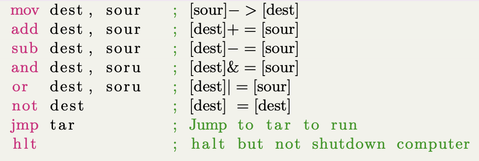
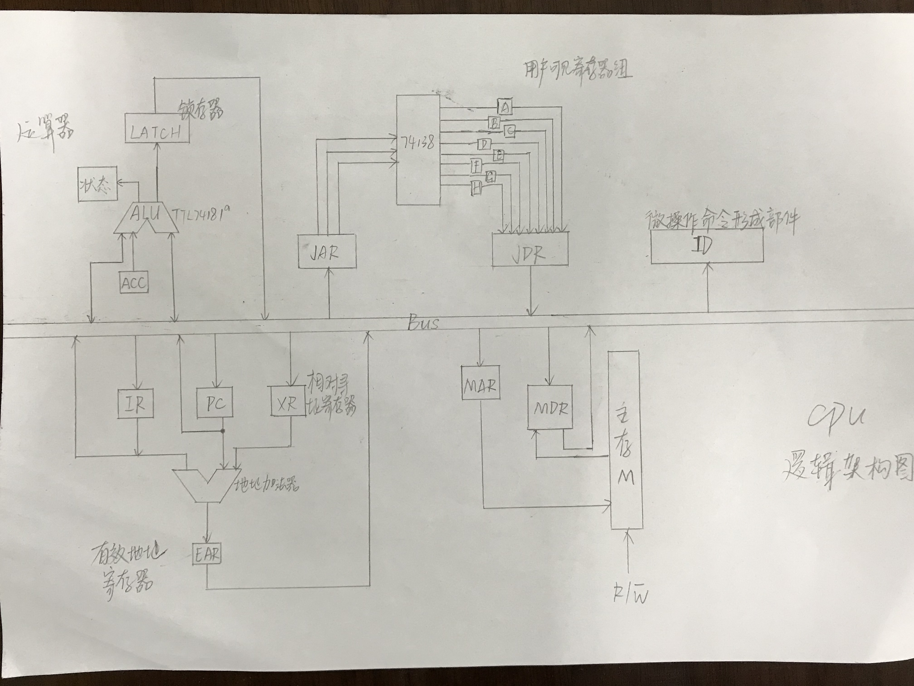

计算机组成原理 - 设计一个 CPU
计算机组成原理课程的一个大作业：设计一个符合下列要求的 CPU。完整项目请移步：https://github.com/kehanXue/Design-A-CPU。
CPU 设计要求
基本要求
- CPU 字长为 8 位，8 个程序员可见的寄存器，分别命名为 r0, . . . , r7
- 地址总线、数据总线各为 8 位，可访问 28 字节的地址空间
- 数据采用补码表示，只需支持定点运算
- 采用定长三级时序，每个指令周期包含 3 个机器周期 (取指周期、间址周期和执行周 期)，每个机器周期由 3 个节拍构成
- 系统时钟频率为 130MHZ
- 为减低成本，采用 TTL 74181a 作为运算器
指令集特点
- 支持零操作数、单操作数和双操作数三种指令
- 所有指令的两个操作数不能同时为内存操作数
- 支持立即寻址、直接寻址、寄存器直接寻址和相对寻址四种寻址方式
- 采用 1 字节或者 2 字节变长指令字，操作码采用定长格式
支持的指令

要完成的任务
- 请设计符合要求的指令格式
- 给出所设计 CPU 的逻辑框图
- 给出基于硬布线设计控制器的逻辑表达式
- 给出基于微程序设计控制器的微指令及控存中的微程序
指令系统设计
由于指令的操作数与寻址方式不同，根据作业中所要求实现的指令类型，以以下思路设计指令系统.
分析寻址类型需求
- 由于存在 种不同操作指令，所以可以用 3bit 的操作码来区分该 8 种不同操作指令
| mov | add | sub | and | or | not | jmp | hlt |
|---|---|---|---|---|---|---|---|
| 000 | 001 | 010 | 011 | 100 | 101 | 110 | 111 |
其中 mov, add, sub, and, or 为双操作数指令，not 和 jmp 为单操作数指令，hlt 为零操作数指令
-
所有指令的两个操作数不能同时为内存操作数。该 CPU 需支持立即寻址，直接寻址，寄存器直接寻址和相对寻址.
其中有以下约束:
- 目的操作数不能为立即寻址方式
- 相对寻址一般用于转移指令，所以本大作业设计中不在其他类型指令中出现
- 指令字长为单字节或双字节
设定每一条指令的左操作数为目的操作数，右操作数为源操作数.
为了区分不同的寻址方式，需要在操作数前面加上寻址特征.
本题目中双操作数指令的寻址方式均有 4 种，设定寻址特征如下:
| 寻址方式 | 寄存器直接寻址 - 立即数寻址 | 寄存器直接寻址 - 寄存器直接寻址 | 寄存器直接寻址 - 直接寻址 | 直接寻址 - 寄存器直接寻址 |
|---|---|---|---|---|
| 寻址特征 | 00 | 01 | 10 | 11 |
单操作数 not 指令的寻址方式有两种，直接寻址与寄存器直接寻址. not 为单操作数指令，操作数可以为直接寻址与寄存器直接寻址两种方式。因为指令的位数够用，为了保持指令格式的整齐，仍采用 2 位的寻址特征.
| 寻址方式 | 寄存器直接寻址 | 直接寻址 |
|---|---|---|
| 寻址特征 | 00 | 01 |
单操作数 jmp 指令是转移类指令，有相对偏移与绝对偏移两种方式。相对偏移的方式即为相对寻址，跳转后的地址为 PC 当前值 + jmp 指令的操作数。绝对偏移即为立即寻址，直接跳转到 jmp 指令的操作数代表的地址.
| 寻址方式 | 相对寻址 | 立即寻址 |
|---|---|---|
| 寻址特征 | 00 | 01 |
确定各种指令中不同操作数的长度:
- 立即数寻址取决于剩下的指令位数
- 个程序员可见寄存器，寄存器寻址操作数长度为 3
- 字节的地址空间，直接寻址操作数的长度为 8
设计指令系统
mov
分为以下几种情况:
movRI
| 操作码 | 寻址特征 | 左操作数：寄存器编号 (3 位) | 右操作数：立即数 (8 位) |
|---|---|---|---|
| 000 | 00 | xxx | xxxxxxxx |
movRR
| 操作码 | 寻址特征 | 空码 | 左操作数：寄存器编号 (3 位) | 右操作数：寄存器编号 (3 位) |
|---|---|---|---|---|
| 000 | 01 | 00000 | xxx | xxx |
movRM
| 操作码 | 寻址特征 | 左操作数：寄存器编号 (3 位) | 右操作数：主存地址编号 (8 位) |
|---|---|---|---|
| 000 | 10 | xxx | xxxxxxxx |
movMR
| 操作码 | 寻址特征 | 左操作数：主存地址编号 (8 位) | 右操作数：寄存器编号 (3 位) |
|---|---|---|---|
| 000 | 11 | xxxxxxxx | xxx |
add
同 mov, 分为以下几种情况:
addRI
| 操作码 | 寻址特征 | 左操作数：寄存器编号 (3 位) | 右操作数：立即数 (8 位) |
|---|---|---|---|
| 001 | 00 | xxx | xxxxxxxx |
addRR
| 操作码 | 寻址特征 | 空码 | 左操作数：寄存器编号 (3 位) | 右操作数：寄存器编号 (3 位) |
|---|---|---|---|---|
| 001 | 01 | 00000 | xxx | xxx |
addRM
| 操作码 | 寻址特征 | 左操作数：寄存器编号 (3 位) | 右操作数：主存地址编号 (8 位) |
|---|---|---|---|
| 001 | 10 | xxx | xxxxxxxx |
addMR
| 操作码 | 寻址特征 | 左操作数：主存地址编号 (8 位) | 右操作数：寄存器编号 (3 位) |
|---|---|---|---|
| 001 | 11 | xxxxxxxx | xxx |
sub
同 mov, 分为以下几种情况:
subRI
| 操作码 | 寻址特征 | 左操作数：寄存器编号 (3 位) | 右操作数：立即数 (8 位) |
|---|---|---|---|
| 010 | 00 | xxx | xxxxxxxx |
subRR
| 操作码 | 寻址特征 | 空码 | 左操作数：寄存器编号 (3 位) | 右操作数：寄存器编号 (3 位) |
|---|---|---|---|---|
| 010 | 01 | 00000 | xxx | xxx |
subRM
| 操作码 | 寻址特征 | 左操作数：寄存器编号 (3 位) | 右操作数：主存地址编号 (8 位) |
|---|---|---|---|
| 010 | 10 | xxx | xxxxxxxx |
subMR
| 操作码 | 寻址特征 | 左操作数：主存地址编号 (8 位) | 右操作数：寄存器编号 (3 位) |
|---|---|---|---|
| 010 | 11 | xxxxxxxx | xxx |
and
同 mov, 分为以下几种情况:
andRI
| 操作码 | 寻址特征 | 左操作数：寄存器编号 (3 位) | 右操作数：立即数 (8 位) |
|---|---|---|---|
| 011 | 00 | xxx | xxxxxxxx |
andRR
| 操作码 | 寻址特征 | 空码 | 左操作数：寄存器编号 (3 位) | 右操作数：寄存器编号 (3 位) |
|---|---|---|---|---|
| 011 | 01 | 00000 | xxx | xxx |
andRM
| 操作码 | 寻址特征 | 左操作数：寄存器编号 (3 位) | 右操作数：主存地址编号 (8 位) |
|---|---|---|---|
| 011 | 10 | xxx | xxxxxxxx |
andMR
| 操作码 | 寻址特征 | 左操作数：主存地址编号 (8 位) | 右操作数：寄存器编号 (3 位) |
|---|---|---|---|
| 011 | 11 | xxxxxxxx | xxx |
or
同 mov, 分为以下几种情况:
orRI
| 操作码 | 寻址特征 | 左操作数：寄存器编号 (3 位) | 右操作数：立即数 (8 位) |
|---|---|---|---|
| 100 | 00 | xxx | xxxxxxxx |
orRR
| 操作码 | 寻址特征 | 空码 | 左操作数：寄存器编号 (3 位) | 右操作数：寄存器编号 (3 位) |
|---|---|---|---|---|
| 100 | 01 | 00000 | xxx | xxx |
orRM
| 操作码 | 寻址特征 | 左操作数：寄存器编号 (3 位) | 右操作数：主存地址编号 (8 位) |
|---|---|---|---|
| 100 | 10 | xxx | xxxxxxxx |
orMR
| 操作码 | 寻址特征 | 左操作数：主存地址编号 (8 位) | 右操作数：寄存器编号 (3 位) |
|---|---|---|---|
| 100 | 11 | xxxxxxxx | xxx |
not
notR
| 操作码 | 寻址特征 | 操作数：寄存器编号 (3 位) |
|---|---|---|
| 101 | 00 | xxx |
notM
| 操作码 | 寻址特征 | 空码 | 操作数：主存地址编号 (8 位) |
|---|---|---|---|
| 101 | 01 | xxx | xxxxxxxx |
jmp
jmpR
| 操作码 | 寻址特征 | 空码 | 操作数：主存地址编号 (8 位) |
|---|---|---|---|
| 110 | 00 | 000 | xxxxxxxx |
jmpD
| 操作码 | 寻址特征 | 空码 | 操作数：主存地址编号 (8 位) |
|---|---|---|---|
| 110 | 01 | 000 | xxxxxxxx |
hlt
无操作数
| 操作码 | 空码 |
|---|---|
| 111 | 00000 |
CPU 逻辑框图

基于硬布线方式的控制器设计
由于采用定长三级时序，每个指令周期包含三个机器周期 (取指周期，间址周期和执行周期), 每个周期由三个节拍构成:
-
命名取指周期为 FF, 间址周期命名为 IND, 执行周期命名为 EX
-
三个节拍分别命名为
-
I 为间址标志。若 FF 周期的 时刻测得 I=1, 则 IND 触发器置 “1”, 标志进入间址周期。若 I=0, 则 EX 触发器置 “1”, 标志进入执行周期。若在 IND 时期的 时刻测得 IND=0, 则 EX 置 “1”, 表示进入执行周期，表示只有一次间址；若 IND=1, 则表示多次间址，继续进行间址寻址操作.
根据每一条指令的节拍安排，总结出表 (见附件 DesignCPUHard.xls, 由于表格太大了，文档里放不下)
化简得出以下微操作命令的表达式:


基于微程序方式的控制器设计
微程序，将一条机器指令编写成一个微程序，每个微程序包括若干条微指令，每一条微指令对应一个或几个微操作命令。然后把这些微程序存到一个控制寄存器中，用寻找用户程序机器指令的方法来寻找每个微程序中的微指令。
微程序设计省去了组合逻辑设计中队逻辑表达式的化简步骤，无需考虑逻辑门级数等，用规整的存储逻辑代替不规则的硬接线逻辑来实现计算机控制器的技术。
微指令格式设计
| 2 位 | 2 位 | 5 位 | 7 位 |
| 控制操作字段 | 顺序操作字段 | ||
微指令的操作字段采用字段直接编码方式，该字段发出各种控制信号。顺序控制字段仅在微程序的最后指向取值微程序，它可指出下条微指令的地址（简称下地址），以控制微指令序列的执行顺序。
前 2 位存放取值微程序相关的微操作
| 00 | 无操作 |
|---|---|
| 01 | PC->MAR |
| 10 | M (MAR)->MDR |
| 11 | MDR->IR |
中间 2 位存放一些读、写信号的置有效和程序计算器等微操作
| 000 | 无操作 |
|---|---|
| 001 | 1->R |
| 010 | (PC)+1->PC |
| 011 | 1->W |
中间 5 位存放转移、加减和取反等操作
| 00000 | 无操作 |
| 00001 | MDR->ACC |
| 00010 | JDR->ACC |
| 00011 | AD (IR)->MAR |
| 00100 | AD (IR)->JAR |
| 00101 | M (JAR)->JDR |
| 00110 | M (MAR)->MDR |
| 00111 | MDR->M (JAR) |
| 01000 | JDR->M (MAR) |
| 01001 | ACC->M (MAR) |
| 01010 | ACC->M (JAR) |
| 01011 | LATCH->M (MAR) |
| 01100 | LATCH->M (JAR) |
| 01101 | MDR+(ACC)->LATCH |
| 01110 | JDR+(ACC)->LATCH |
| 01111 | MDR-(ACC)->LATCH |
| 10000 | JDR-(ACC)->LATCH |
| 10001 | MDR&(ACC)->LATCH |
| 10010 | JDR&(ACC)->LATCH |
| 10011 | MDR(ACC)->LATCH" |
| 10100 | JDR(ACC)->LATCH" |
| 10101 | LATCH->M (MAR) |
| 10110 | LATCH->M (JAR) |
| 10111 | !(ACC)->LATCH |
| 11000 | (PC)+AD (IR)->EAR |
| 11001 | EAR->PC |
| 11010 | AD (IR)->PC |
| 11011 | 无效 |
| 11100 | 无效 |
| 11101 | 无效 |
| 11110 | 无效 |
| 11111 | 无效 |
微程序

| PC->BUS->MAR,1->R | M+1 | M | 取值周期微程序 |
|---|---|---|---|
| M (MAR)->MDR,(PC)+1->PC | M+2 | ||
| MDR->BUS->IR | M+2 | ||
| OP (IR)->BUS->ID | M+3 | ||
| AD (IR)->BUS->JAR | A+1 | A | movRI 周期微程序 |
| DA (IR)->BUS->M (JAR) | M | ||
| AD (IR)->BUS->JAR | B+1 | B | movRR 周期微程序 |
| M (JAR)->JDR | B+2 | ||
| AD (IR)->JAR | B+3 | ||
| JDR->M (JAR) | M | ||
| AD (IR)->BUS->MAR，1->R | C+1 | C | movRM 周期微程序 (间址) |
| M (MAR)->MDR | C+2 | （间址） | |
| AD (IR)->BUS->JAR | C+3 | ||
| MDR->M (JAR) | M | ||
| AD (IR)->BUS->JAR | D+1 | D | movMR 周期微程序 |
| M (JAR)->JDR | D+2 | ||
| AD (IR)->BUS->MAR | D+3 | ||
| M (MAR)->BUS->JDR | M | ||
| DA (IR)->BUS->ACC | E+1 | E | addRI 周期微程序 |
| AD (IR)->BUS->JAR | E+2 | ||
| M (JAR)->MDR | E+3 | ||
| MDR+(ACC)->LATCH | E+4 | ||
| LATCH->BUS->M (JAR) | M | ||
| AD (IR)->BUS->JAR | F+1 | F | addRR 周期微程序 |
| M (JAR)->JDR | F+2 | ||
| JDR->BUS->ACC | F+3 | ||
| AD (IR)->BUS->JAR | F+4 | ||
| M (JAR)->JDR | F+5 | ||
| JDR+(ACC)->LATCH | F+6 | ||
| LATCH->BUS->M (JAR) | M | ||
| AD (IR)->BUS->MAR | G+1 | G | addRM 周期微程序 (间址) |
| M (MAR)->BUS->MDR | G+2 | （间址) | |
| MDR->BUS->ACC | G+3 | ||
| AD (IR)->BUS->JAR | G+4 | ||
| M (JAR)->JDR | G+5 | ||
| JDR+(ACC)->LATCH | G+6 | ||
| LATCH->BUS->M (MAR) | M | ||
| AD (IR)->BUS->JAR | H+1 | H | addMR 周期微程序 |
| AD (IR)->BUS->MAR | H+2 | (间址) | |
| M (MAR)->MDR | H+3 | (间址) | |
| M (JAR)->JDR | H+4 | ||
| JDR->BUS->ACC | H+5 | ||
| MDR+(ACC)->LATCH | H+6 | ||
| LATCH->BUS->M (JAR) | M | ||
| DA (IR)->BUS->ACC | I+1 | I | subRI 周期微程序 |
| AD (IR)->BUS->JAR | I+2 | ||
| M (JAR)->MDR | I+3 | ||
| MDR-(ACC)->LATCH | I+4 | ||
| LATCH->BUS->M (JAR) | M | ||
| AD (IR)->BUS->JAR | J+1 | J | subRR 周期微程序 |
| M (JAR)->JDR | J+2 | ||
| JDR->BUS->ACC | J+3 | ||
| AD (IR)->BUS->JAR | J+4 | ||
| M (JAR)->JDR | J+5 | ||
| JDR-(ACC)->LATCH | J+6 | ||
| LATCH->BUS->M (JAR) | M | ||
| AD (IR)->BUS->MAR | K+1 | K | subRM 周期微程序 (间址) |
| M (MAR)->BUS->MDR | K+2 | （间址) | |
| MDR->BUS->ACC | K+3 | ||
| ID (IR)->BUS->JAR | K+4 | ||
| M (JAR)->JDR | K+5 | ||
| JDR-(ACC)->LATCH | K+6 | ||
| LATCH->BUS->M (MAR) | M | ||
| AD (IR)->BUS->JAR | L+1 | L | subMR 周期微程序 |
| M (JAR)->JDR | L+2 | ||
| JDR->BUS->ACC | L+3 | ||
| AD (IR)->BUS->MAR | L+4 | (间址) | |
| M (MAR)->MDR | L+5 | (间址) | |
| MDR-(ACC)->LATCH | L+6 | ||
| LATCH->M (JAR) | M | ||
| DA (IR)->BUS->ACC | N+1 | N | andRI 周期微程序 |
| AD (IR)->BUS->JAR | N+2 | ||
| M (JAR)->MDR | N+3 | ||
| MDR&(ACC)->LATCH | N+4 | ||
| LATCH->BUS->M (JAR) | M | ||
| AD (IR)->BUS->JAR | O+1 | O | andRR 周期微程序 |
| M (JAR)->JDR | O+2 | ||
| JDR->BUS->ACC | O+3 | ||
| AD (IR)->BUS->JAR | O+4 | ||
| M (JAR)->JDR | O+5 | ||
| JDR&(ACC)->LATCH | O+6 | ||
| LATCH->BUS->M (JAR) | M | ||
| AD (IR)->BUS->MAR | P+1 | P | andRM 周期微程序 (间址) |
| M (MAR)->BUS->MDR | P+2 | （间址) | |
| MDR->BUS->ACC | P+3 | ||
| ID (IR)->BUS->JAR | P+4 | ||
| M (JAR)->JDR | P+5 | ||
| JDR&(ACC)->LATCH | P+6 | ||
| LATCH->BUS->M (MAR) | M | ||
| AD (IR)->BUS->JAR | Q+1 | Q | andMR 周期微程序 |
| M (JAR)->JDR | Q+2 | ||
| JDR->BUS->ACC | Q+3 | ||
| AD (IR)->BUS->MAR | Q+4 | (间址) | |
| M (MAR)->MDR | Q+5 | (间址) | |
| MDR&(ACC)->LATCH | Q+6 | ||
| LATCH->M (JAR) | M | ||
| DA (IR)->BUS->ACC | R+1 | R | orRI 周期微程序 |
| AD (IR)->BUS->JAR | R+2 | ||
| M (JAR)->MDR | R+3 | ||
| MDR|(ACC)->LATCH | R+4 | ||
| LATCH->BUS->M (JAR) | M | ||
| AD (IR)->BUS->JAR | S+1 | S | orRR 周期微程序 |
| M (JAR)->JDR | S+2 | ||
| JDR->BUS->ACC | S+3 | ||
| AD (IR)->BUS->JAR | S+4 | ||
| M (JAR)->JDR | S+5 | ||
| JDR|(ACC)->LATCH | S+6 | ||
| LATCH->BUS->M (JAR) | M | ||
| AD (IR)->BUS->MAR | T+1 | T | orRM 周期微程序 (间址) |
| M (MAR)->BUS->MDR | T+2 | （间址) | |
| MDR->BUS->ACC | T+3 | ||
| ID (IR)->BUS->JAR | T+4 | ||
| M (JAR)->JDR | T+5 | ||
| JDR|(ACC)->LATCH | T+6 | ||
| LATCH->BUS->M (MAR) | M | ||
| AD (IR)->BUS->MAR | U+1 | U | orMR 周期微程序 (间址) |
| M (MAR)->MDR | U+2 | (间址) | |
| AD (IR)->BUS->JAR | U+3 | ||
| M (JAR)->JDR | U+4 | ||
| JDR->BUS->ACC | U+5 | ||
| MDR|(ACC)->LATCH | U+6 | ||
| LATCH->M (JAR) | M | ||
| AD (IR)->BUS->JAR | V+1 | V | notR 周期微程序 |
| M (JAR)->JDR | V+2 | ||
| JDR->BUS->ACC | V+3 | ||
| !(ACC)->LATCH | V+4 | ||
| LATCH->BUS->M (JAR) | M | ||
| AD (IR)->BUS->MAR | W+1 | W | notM 周期微程序 (间址) |
| M (MAR)->MDR | W+2 | （间址） | |
| MDR->BUS->ACC | W+3 | ||
| !(ACC)->LATCH | W+4 | ||
| LATCH->Bus->M (MAR) | M | ||
| (PC)+AD (IR)->EAR | X+1 | X | jmpR 周期微程序 |
| EAR->BUS->PC | M | ||
| AD (IR)->PC | M | Y | |
| M | Z | htl 周期微程序 |
authors：薛轲翰，谢其骏
本博客所有文章除特别声明外，均采用 CC BY-SA 4.0 协议 ，转载请注明出处！联系作者。